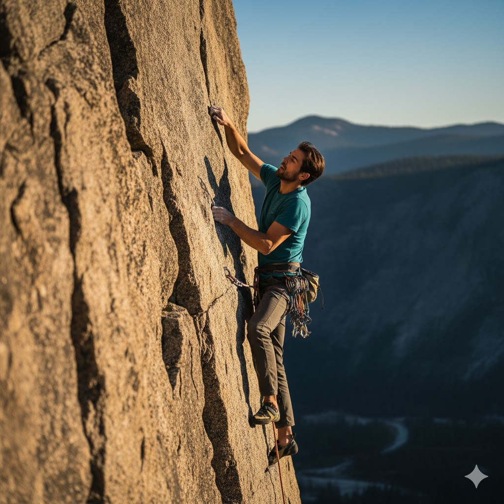
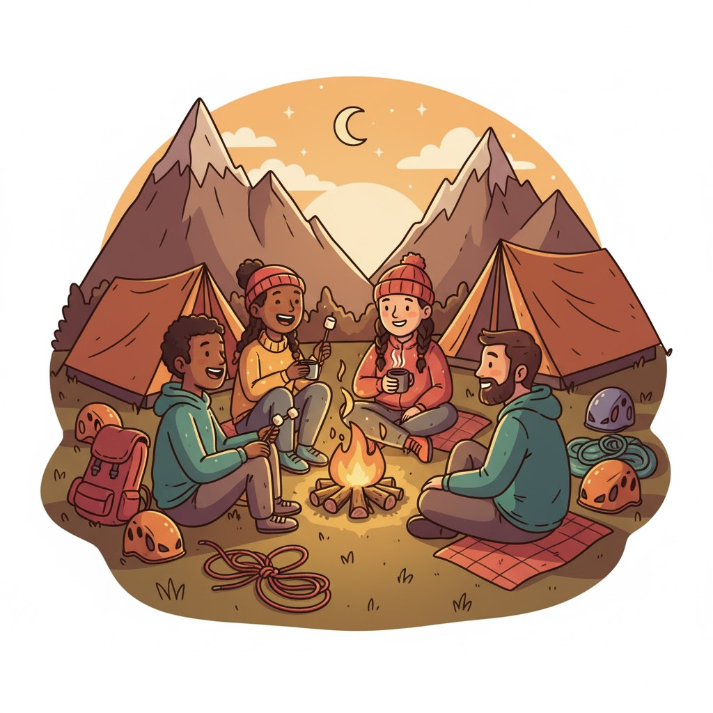
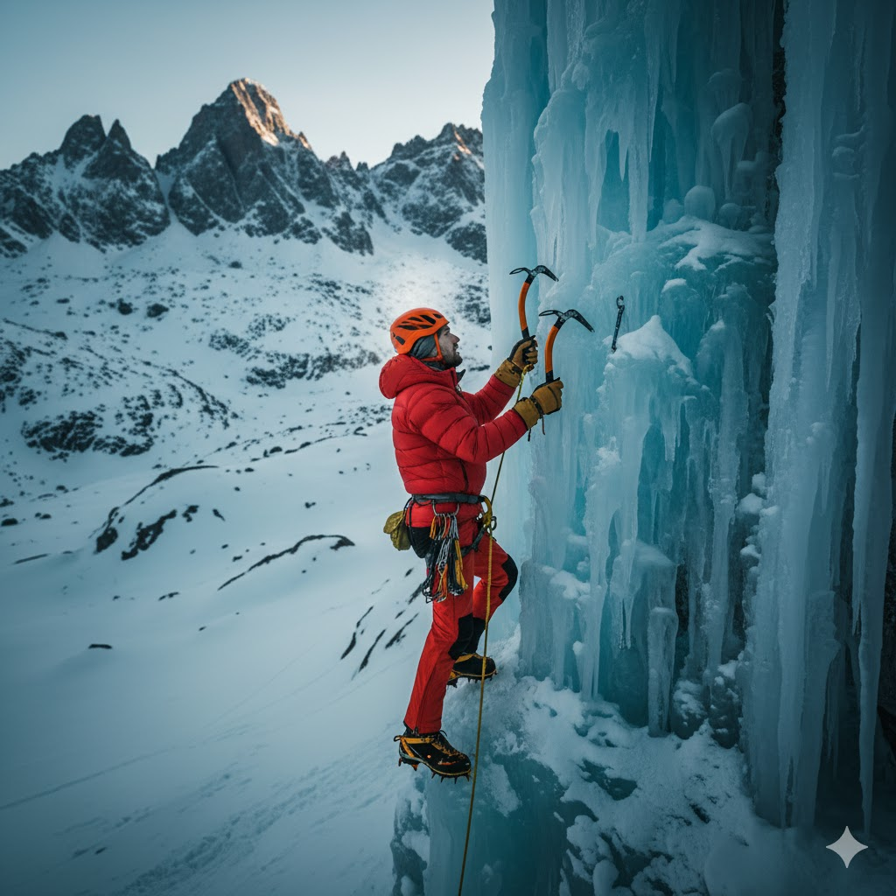
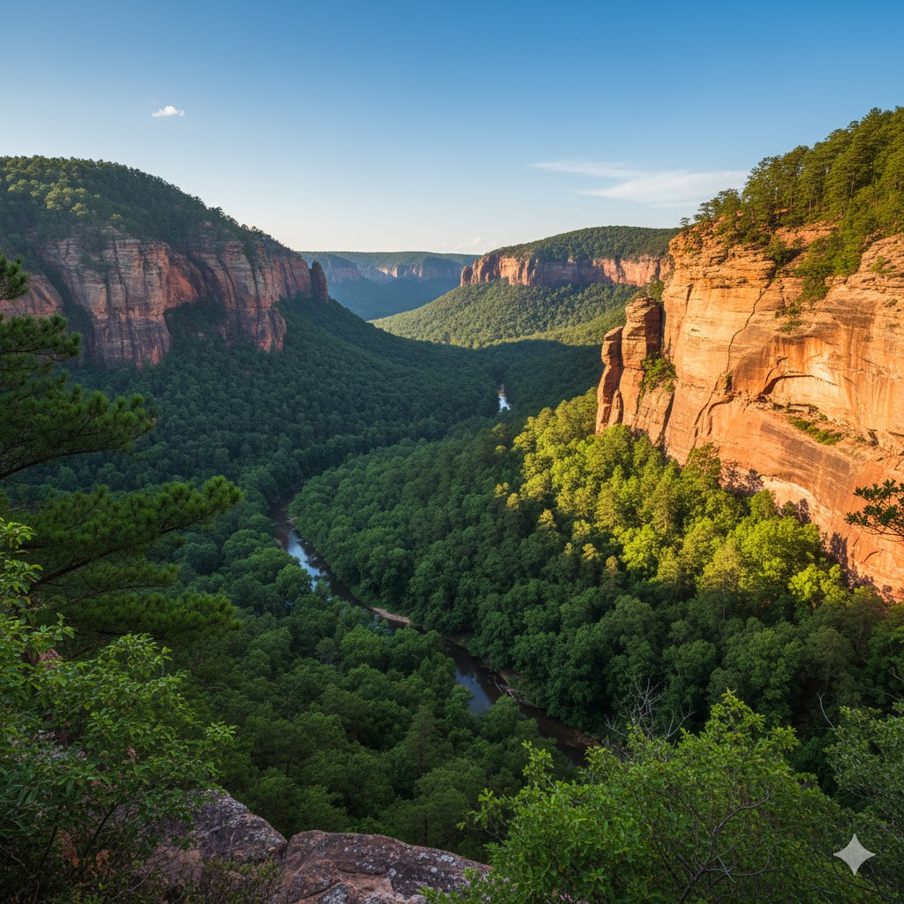
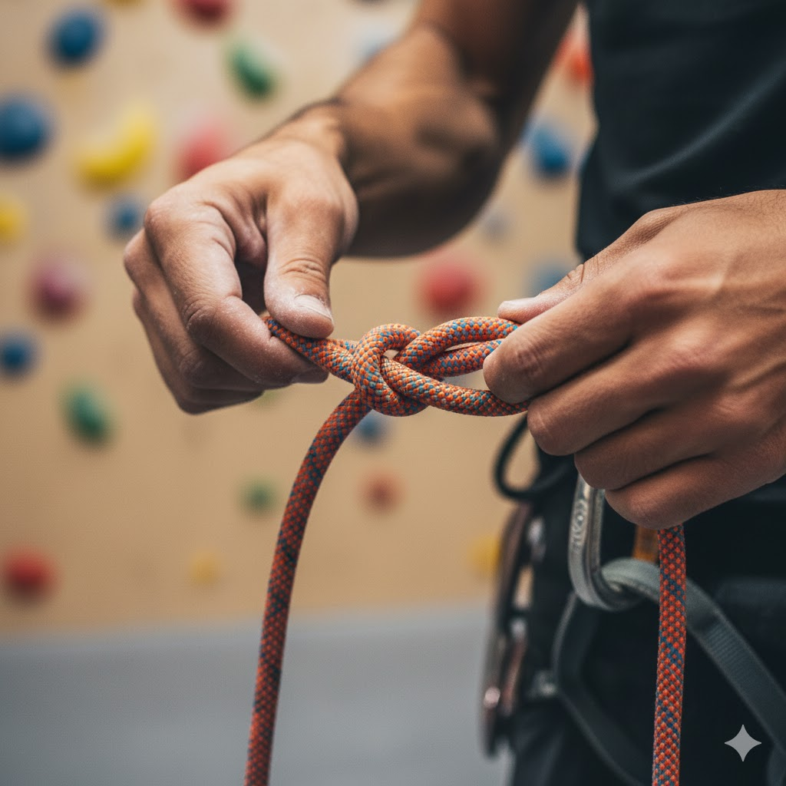
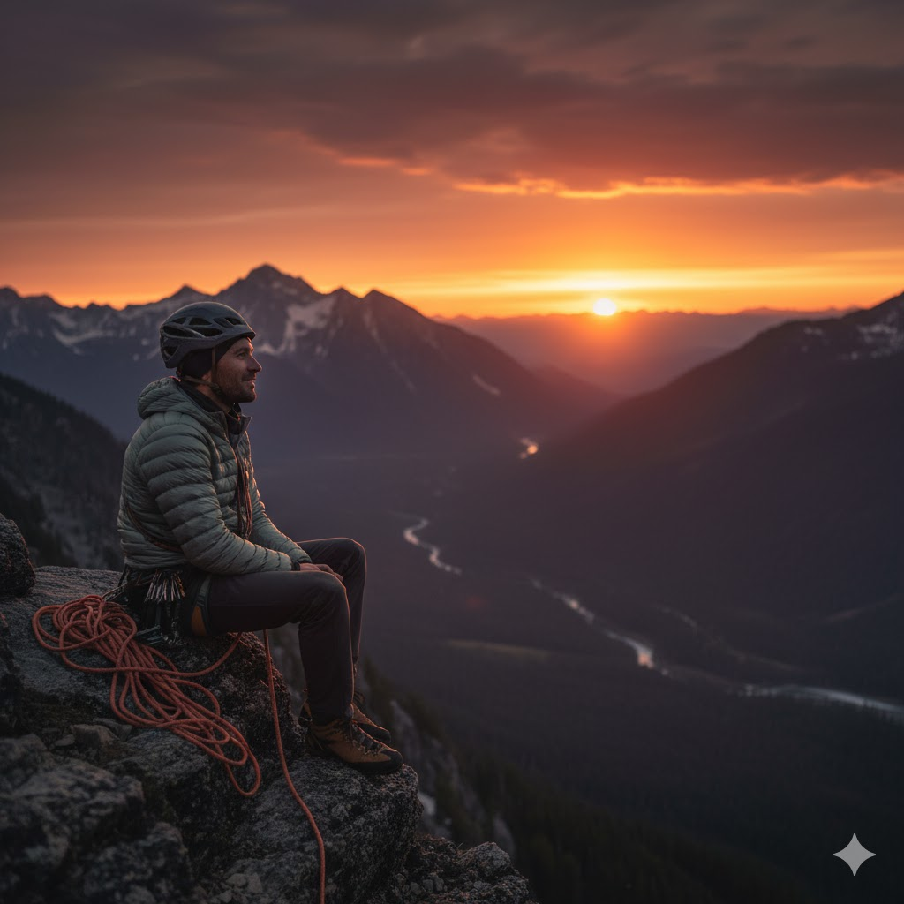

Rock climbing is a physically and mentally demanding sport in which participants climb up, down, or across natural rock formations or artificial rock walls. The goal is to reach the summit of a formation or the endpoint of a pre-defined route without falling. It tests a climber's strength, endurance, agility, and balance, along with mental control.

A solo climber gracefully navigating a challenging outdoor route.
AI Prompt: "Photorealistic image of a lone rock climber ascending a steep, sunlit granite slab face, focused expression, cinematic lighting, adventure photography style."
The Disciplines of Climbing
Climbing has several sub-disciplines, each with its own gear and risk profile:
Bouldering: Climbing without ropes on small rock formations or walls, relying on crash pads for safety.
Sport Climbing: Climbing protected by permanent bolts fixed to the rock, using a rope and quickdraws.
Traditional (Trad) Climbing: Placing temporary protective devices (cams, nuts) into the rock, which are removed after the climb.
Aid Climbing: Using equipment to help ascend, not just for protection.
Who Climbs? (About the Community)
The rock climbing community is incredibly diverse, encompassing people of all ages, backgrounds, and fitness levels. It's a sport that values support, trust, and shared experience, often building deep bonds between climbing partners (or 'belayers').

Climbing partners sharing stories and camaraderie at a base camp.
AI Prompt: "Cartoon style illustration of a diverse group of four rock climbers, happy and relaxed, sitting around a small campfire at a mountain base camp, evening lighting, warm colors."
Join the Local Climbing Group
Want to find a partner? Fill out our quick interest form, and we'll match you with a local group or mentor based on your experience level.
From competitive athletes pushing the limits of human performance to weekend warriors enjoying the outdoors, the common thread is a passion for vertical movement and problem-solving.
When is the Best Time to Climb?
The ideal time for climbing is highly dependent on location, but generally, spring and fall offer the best conditions. These shoulder seasons typically provide stable, cooler temperatures that are ideal for grip and endurance, avoiding the extreme heat of summer and the ice/snow of winter.
Seasonal Climbing Considerations
Season
Conditions
Discipline Focus
Spring
Cool, variable rain. Ideal for desert climates.
Sport Climbing, Trad Climbing
Summer
Hot, humid. Best for high-altitude or indoor gyms.
Indoor Bouldering, Alpine Climbing
Fall
Cool, dry. The absolute best time for friction and grip.

An ice climber navigating a frozen waterfall in the depth of winter.
AI Prompt: "Photorealistic image of a solitary ice climber wearing bright red gear, meticulously ascending a towering, blue-tinged frozen waterfall, dramatic mountain backdrop, winter setting."
For indoor climbers, "when" is anytime! Modern climbing gyms provide a climate-controlled environment, allowing for year-round training and community interaction regardless of the weather outside.
Where are the Best Climbing Locations?
Climbing destinations span the globe, offering every type of rock imaginable, from limestone and sandstone to granite. The "best" location is subjective, but some places are internationally recognized for their scale, beauty, and quality of routes.
Top North American Destinations
Yosemite National Park, CA: Home to El Capitan and Half Dome, famous for big wall traditional climbing.
Red River Gorge, KY: Known for overhanging sandstone sport climbing routes.
Joshua Tree National Park, CA: Excellent for trad climbing on unique monzogranite formations.
Gunks (Shawangunk Mountains), NY: Classic multi-pitch traditional routes.

The Red River Gorge, a world-class destination for overhanging sport routes.
AI Prompt: "Photorealistic landscape of a lush, wooded valley with dramatic, orange-hued sandstone cliff walls, high-angle shot capturing the scale, Red River Gorge aesthetic."
For those starting out, the local climbing gym is the best 'where.' It provides a safe, controlled environment to learn the basics before venturing outdoors. Many urban areas now boast impressive indoor facilities.
How to Get Started in Climbing
Starting rock climbing is more accessible than ever before. The safest and most efficient way to begin is by visiting a local indoor climbing gym. They provide all the rental gear, introductory classes, and supervision you need to get a feel for the sport.
The Three Steps to Your First Climb
Follow these steps to transition from curious beginner to competent climber:
Visit a Gym: Try bouldering first. It requires minimal gear (just shoes) and teaches fundamental movement patterns.
Take a Belay Class: If you want to use ropes (top-roping), you must learn how to properly 'belay' (manage the rope) for your partner. Most gyms offer certified classes.
Invest in Gear: Once you're hooked, buy your own climbing shoes and chalk bag. These personal items make a big difference in comfort and performance.

Learning the figure-eight follow-through knot is the first crucial safety lesson.
AI Prompt: "Close-up photorealistic shot of hands demonstrating how to tie a 'figure eight follow-through' climbing knot with a thick, brightly colored rope, focus on the knot and hands."
Essential Beginner Gear Checklist
Climbing Shoes
Chalk Bag and Chalk
Harness (for roped climbing)
Belay Device
Helmet (for outdoor use)
Why Rock Climb?
The reasons people are drawn to rock climbing are as varied as the routes they climb. For many, it's the perfect blend of physical challenge and mental engagement. It's often described as "moving meditation" because it requires complete focus, pushing out all other distractions.

The unparalleled view and sense of accomplishment at the top of a multi-pitch climb.
AI Prompt: "Photorealistic image of a climber resting on a small mountain ledge, looking at a stunning panoramic sunset view of a valley and distant peaks, emotional and quiet atmosphere."
The Benefits Beyond the Climb
Climbing offers profound benefits that extend into everyday life:
Physical Fitness
It's a full-body workout that builds functional strength, particularly in the core, forearms, and back. It also significantly improves flexibility and balance.
Mental Resilience
Climbing teaches problem-solving under pressure, fear management, and concentration. Successfully completing a difficult route builds immense self-confidence.
Community
The sport fosters a supportive and collaborative community where trust (in your belayer) is paramount, leading to deep, lasting friendships.
Design & Development Notes
This section documents the requirements and design decisions used to build the page. The site was created to satisfy course/project specifications: a single-file HTML document with embedded stylesheet, a header/main/footer layout, and six content sections (What, Who, When, Where, How, Why). Navigation is implemented so only one section is visible at a time; the "What" section appears by default.
Styling Requirements
CRAP-based layout and visual hierarchy.
Color scheme: deep teal (#4a6d71) and bright gold (#ffcc66); off-white page background (#f4f4e8).
No Times New Roman, no plain black body text, and no generic blue underlined links.
Navigation links are high-contrast and clearly clickable for accessibility.
Content Notes
The "Who" section emphasizes community and diversity. The "When" section includes a three-column table covering seasonal considerations (Season, Conditions, Discipline Focus). Images shown are placeholders and should be replaced with original or properly licensed media as needed.